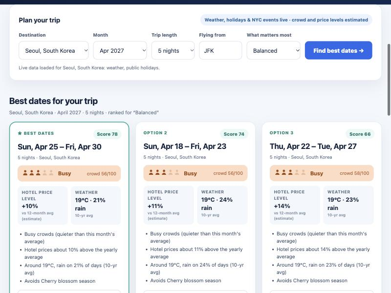

Find the best week to travel: fewer crowds, lower cost. EventStay compares crowd levels, festivals, public holidays, weather and hotel price seasons day by day, then recommends the best dates for your trip.
Current Status: Build 3 · Best travel dates finder (live public data)
EventStay AI helps leisure travelers with flexible dates choose when to go. Pick a destination (Ibiza, Seoul or New York City), a month, a trip length, your home airport and what matters most: balanced, lowest cost, fewest crowds or catching a festival.
EventStay ranks every check-in date in that month and shows the top three with the reasons: crowd level, hotel price level against the yearly average, expected weather, and festivals or holidays the trip overlaps or avoids. A 12-month crowd chart and a day-by-day crowd calendar make busy and quiet periods easy to see. Each recommendation opens Google Flights and Booking.com with the dates already filled in.

Who is this for? Leisure travelers with flexible dates, especially college students and young professionals, planning a trip to a popular destination and trying to keep costs down. Reachable users are friends and classmates who travel several times a year.
Job to be done: "Tell me which week to go so I pay less and avoid the crowds, and tell me why."
The painful "Before" workflow: Travelers check flight and hotel prices on several sites one date at a time. Separately, they search for festivals, public holidays and the weather, and often only find out about a big event after booking, when prices are high and the city is packed. Nothing puts cost, crowds and weather side by side for a whole month.
The "After" workflow with this product: The traveler picks a destination, a month and a trip length. In seconds EventStay shows the three best check-in dates with the reasons, a crowd calendar for the month, and what's on (festivals, holidays, season notes). One click opens flights and hotels for those exact dates.
Riskiest Assumption:
Travelers will trust crowd and price-level estimates enough to change their travel dates. We test
this by watching whether users open flights or hotels for a recommended date
(outbound_click) after a search (best_dates_search), and by asking test
users whether the reasons convinced them.
Data sources (all free and keyless, called from the browser):
Simple Architecture: User picks destination, month, nights and priority → Browser fetches weather, holidays (and NYC permits) from public APIs → Daily model: crowd level = city season level + weekend + festival + holiday (+ NYC permit) effects; hotel price level = seasonal index × the same effects → Each check-in date gets a score from crowd, price level and weather comfort, weighted by the user's priority → Top three stays, crowd chart, calendar and deep links.
Known limitations: Season tables and festival dates are estimates based on typical patterns and must be checked against official calendars each year. NYC permit data lists approved permits only, not every concert or conference. There are no live flight or hotel prices yet.